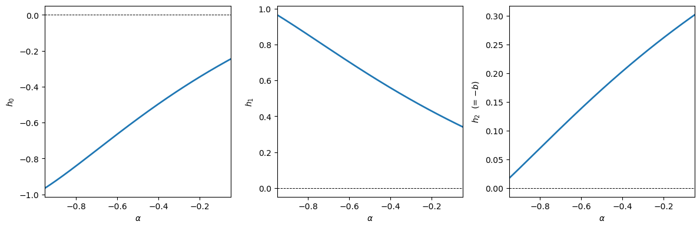
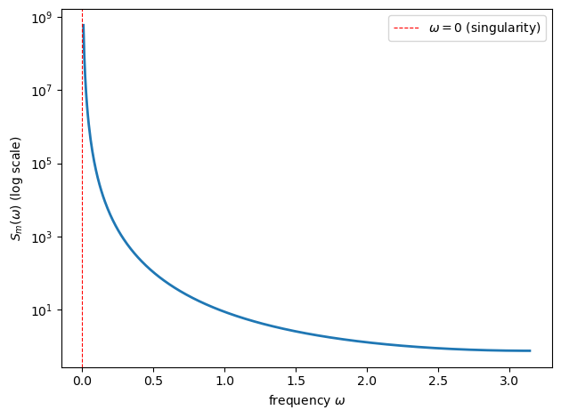
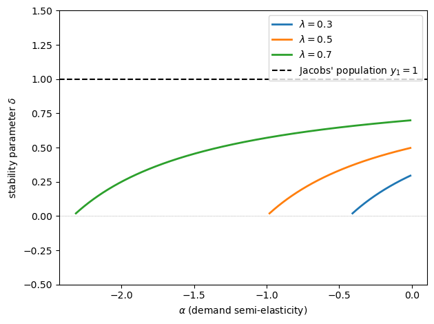
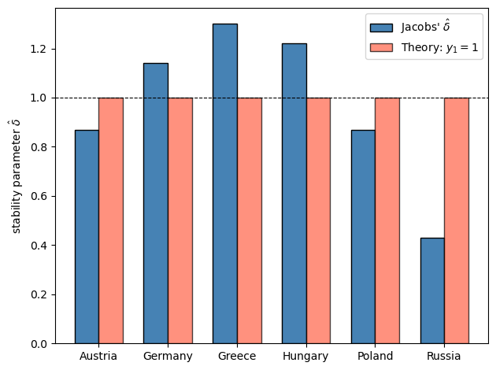
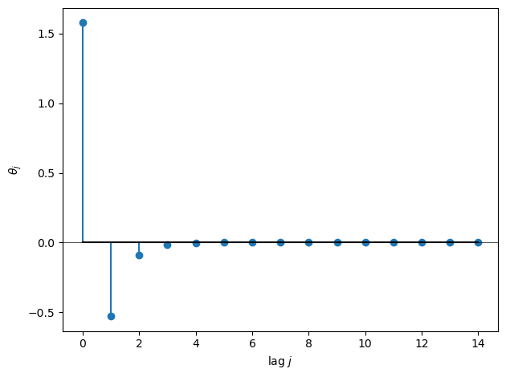
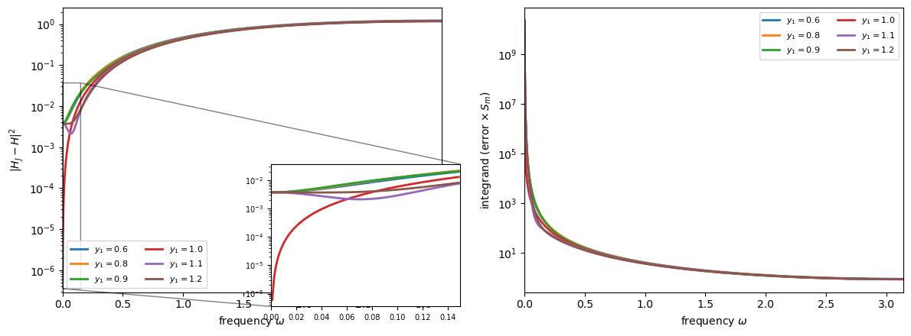
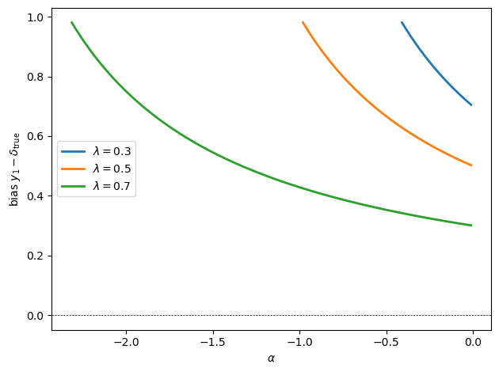

38. Hyperinflation and Information Projection#
38.1. Overview#
This lecture presents the analysis in [Sargent, 1976], which examines the statistical properties of competing estimators of Cagan’s portfolio-balance equation [Cagan, 1956] during hyperinflations.
The topic involves three estimators:
Cagan’s estimator – Cagan [1956] regresses real balances on past inflation rates, and is consistent when its orthogonality condition holds.
Jacobs’ estimator – Jacobs [1975] inverts the equation and regresses real balances on past money growth rates, and is consistent only if money is exogenous.
Sargent’s critique – uses a rational expectations model to show that Jacobs’ estimator is biased when money is not exogenous, and predicts its population limit [Sargent, 1976].
The key computational technique is information projection via the Wiener–Kolmogorov formula, which computes the optimal linear least-squares projection of one covariance-stationary process onto current and past values of another.
Note
See footnote 17 of Sargent [2025] for an explanation of information projection in macroeconomics.
For background on Kullback-Leibler divergence, see Statistical Divergence Measures and Likelihood Ratio Processes and Bayesian Learning.
If nature generates data from \(g_{\delta_0}(x)\) and we fit the misspecified family \(\{f_\theta(x)\}_{\theta \in \Theta}\), the population maximum likelihood estimator solves \(\theta_0 = \operatorname{argmax}_{\theta \in \Theta} E_{g_{\delta_0}} \log f_\theta(x)\).
Equivalently, \(f_{\theta_0}(x)\) is the element of \(\{f_\theta(x)\}_{\theta \in \Theta}\) closest to \(g_{\delta_0}(x)\) in Kullback-Leibler divergence.
Note
See chapter XI of Sargent [1987] for a discussion of the Wiener–Kolmogorov formula and its applications in macroeconomics, and Linear State Space Models for related linear prediction theory.
This delivers the population regression that OLS converges to, regardless of whether the regression is correctly specified.
We begin with imports:
import numpy as np
import matplotlib.pyplot as plt
38.2. Cagan’s hyperinflation model#
For background on the Cagan model, see the introductory lectures A Monetarist Theory of Price Levels and Monetarist Theory of Price Levels with Adaptive Expectations.
Cagan’s [Cagan, 1956] model of portfolio balance during hyperinflation has two equations.
The first is a portfolio-balance equation:
Here \(m_t\) is the log money supply, \(p_t\) is the log price level, \(\pi_t\) is expected inflation, and \(u_t\) is a disturbance.
The second is an adaptive expectations equation:
where \(L\) is the lag operator, \(L^k x_t = x_{t-k}\).
Substituting (38.2) into (38.1) yields Cagan’s regression equation:
Cagan estimated this equation by nonlinear least squares.
The estimator is consistent if and only if \(u_t^*\) is orthogonal to current and past \((p_t - p_{t-1})\), i.e.,
A sufficient condition for (38.4) is that the price level is exogenous.
In that case, money accommodates portfolio disturbances and leaves \(\Delta p_t\) unaffected by \(u_t\).
Jacobs [1975] noted that if money is exogenous instead, in the sense that
then (38.4) generally fails.
When money does not respond to disturbances \(u_t\), the price level must absorb them – creating a correlation between \(p_t\) and \(u_t\) that invalidates Cagan’s orthogonality condition.
38.3. Jacobs’ estimator#
When money is exogenous, Jacobs’ argument is to invert (38.3) and solve for a relationship in which money is the regressor.
Solving (38.3) for \(p\) as a function of current and lagged \(m\)’s and \(u\)’s, and then rearranging, gives:
The stability parameter is
and the disturbance \(u_t'\) is orthogonal to all current and lagged \(m\)’s (under the exogeneity hypothesis).
Jacobs estimated (38.6) by nonlinear least squares and obtained very different estimates of \(\alpha\), \(\lambda\), and \(\delta\) from Cagan’s.
For five of the six hyperinflations in his sample, Jacobs found \(\delta \approx 1\), which is close to the explosive boundary.
This is economically significant because \(\delta < 1\) is required for the hyperinflations to be driven purely by monetary growth rather than self-sustaining explosive dynamics.
Note
The econometric exogeneity tests in Sargent and Wallace [1973] found strong evidence against the hypothesis that \(m\) is exogenous with respect to \(p\) in the hyperinflation data.
A “real bills” regime, in which the monetary authority accommodates inflation, necessarily creates feedback from prices to money creation and invalidates Jacobs’ identifying assumption.
38.4. Rational expectations and the money–price process#
To evaluate Jacobs’ estimator under a failure of money exogeneity, Sargent [1976] assumes that Cagan’s adaptive expectations scheme is equivalent to rational expectations.
The inflation-money creation process is then governed by
where
and
Here \(\eta_t\) and \(\varepsilon_t\) are serially independent random variables with means zero and finite variances \(E[\eta_t^2] = \sigma_\eta^2\) and \(E[\varepsilon_t^2] = \sigma_\varepsilon^2\).
We also allow a contemporaneous covariance
while \(E[\varepsilon_{t-1}\eta_t] = E[\varepsilon_t \eta_{t-1}] = 0\).
Under (38.7) and (38.8), the first difference of inflation, \(x_t\), and the first difference of percentage money creation, \(M_t\), are stationary, correlated MA(1) processes.
The covariogram of \(M\) is
To keep the notation compact, set
Then it is straightforward to calculate
The cross-covariogram of \(x\) and \(M\) is
Again, a direct calculation gives
def structural_to_ma1(α, λ, σ_η2=1.0, σ_ε2=0.5, σ_εη=0.0):
"""Return c(0), c(1), r(-1), r(0), and r(1) for the MA(1) reduced form."""
denom = λ + α * (1.0 - λ)
if np.isclose(denom, 0.0):
raise ValueError("λ + α(1 - λ) must be nonzero.")
φ = 1.0 / denom
A = φ * (1.0 - λ) + 1.0
B = φ * (1.0 - λ)
c0 = (A**2 + 1.0) * σ_ε2 + B**2 * σ_η2 - 2.0 * A * B * σ_εη
c1 = -A * σ_ε2
r_m1 = -φ * (σ_ε2 - σ_εη)
r0 = φ * (A + λ) * σ_ε2 + φ * B * σ_η2 - φ * (A + B + λ) * σ_εη
r1 = -φ * λ * A * σ_ε2 - φ * λ * B * σ_η2 + φ * λ * (A + B) * σ_εη
return c0, c1, r_m1, r0, r1
38.5. Information projection via the Wiener–Kolmogorov formula#
We now use the Wiener–Kolmogorov formula to compute the population regression of one process on the current and past values of another.
Given jointly covariance-stationary processes \(\{x_t\}\) and \(\{M_t\}\), the one-sided projection of \(x_t\) onto \(\{M_t, M_{t-1}, M_{t-2}, \ldots\}\) is the linear combination
that minimizes the mean-squared prediction error \(E[(x_t - \hat{x}_t)^2]\).
The sequence \(\{\theta_j\}\), equivalently its generating function \(\Theta(z) = \sum_{j=0}^{\infty} \theta_j z^j\), is the lag-generating function of the population regression.
The filter satisfies the Wiener–Hopf equation:
The covariance generating function of \(M\) is
and the cross-covariance generating function is
Since \(M_t\) is an MA(1), we can factor
or, equivalently,
Under the fundamental factorization, \(|b| < 1\).
The Wiener–Kolmogorov formula then gives
where \([\cdot]_+\) means ignore all negative powers of \(z\).
We use the projection in two ways:
Compute the unconstrained population regression of \(x_t\) on current and past values of \(M_t\), then convert it into the corresponding regression for \(M_t - x_t\).
Study the constrained regression in (38.12), which minimizes a weighted approximation criterion.
The non-stationarity of the money supply, whose spectrum is unbounded at \(\omega = 0\), means that the approximation criterion is dominated by behavior near the zero frequency.
This forces Jacobs’ estimated stability parameter \(\hat{\delta}\) to converge to 1 in population.
Matching coefficients gives \(b_0 b_1 = c(1)\) and \(b_0^2 + b_1^2 = c(0)\), so \(b\) solves
def spectral_factor(c0, c1):
"""Return the fundamental spectral factor of an MA(1) spectrum."""
if c0 <= 0:
raise ValueError("c(0) must be positive.")
if abs(c1) < 1e-14:
return np.sqrt(c0), 0.0
ratio = c0 / c1
disc = ratio**2 - 4.0
if disc < 0:
raise ValueError("Spectral density not non-negative definite.")
roots = [(ratio + np.sqrt(disc)) / 2.0, (ratio - np.sqrt(disc)) / 2.0]
b = min(roots, key=abs)
b0_sq = c1 / b
return np.sqrt(abs(b0_sq)), b
Since \(|b| < 1\), we can expand
and ignore all negative powers of \(z\). The \(r(-1)z^{-1}\) term therefore drops out, leaving
Therefore,
This is the population regression of \(x_t\) on current and past values of \(M_t\).
def wiener_kolmogorov_projection(c0, c1, r0, r1):
"""Return the projection filter coefficients."""
b0, b = spectral_factor(c0, c1)
b0_sq = b0**2
A = r0 - r1 * b
B = r1
return A, B, b0, b
To study Jacobs’ regression, we need the projection of \(M_t - x_t\) on current and past values of \(M_t\).
The corresponding lag-generating function is:
This simplifies to
The coefficients are:
def compute_h_coefficients(c0, c1, r0, r1):
"""Return the coefficients in the filter H(z)."""
A, B, b0, b = wiener_kolmogorov_projection(c0, c1, r0, r1)
b0_sq = b0**2
h0 = (b0_sq - A) / b0_sq
h1 = (b0_sq * b - B) / b0_sq
h2 = -b
return h0, h1, h2
38.6. Jacobs’ constrained parameterization and the approximation criterion#
Jacobs estimated the constrained version of the population regression:
He interpreted \(y_0 = \alpha (1 - \lambda) / [1 + \alpha (1 - \lambda)]\) and \(y_1 = \delta\).
When the rational expectations model is correct, the unconstrained population regression has the form (38.11), so Jacobs’ parameterization is a binding restriction.
Let \(S_m(\omega)\) denote the spectral density of \(m_t\).
Since \(m_t\) is integrated, \(S_m(\omega)\) is unbounded at \(\omega = 0\).
The approximation criterion is therefore dominated by behavior at \(\omega = 0\).
Note that the least-squares estimators minimize the rate at which the criterion diverges near \(\omega = 0\), which gives
Thus the stability parameter estimated by Jacobs’ procedure converges to unity in population for all admissible values of \(\alpha\), \(\lambda\), and the shock moments.
This provides a complete explanation for Jacobs’ empirical finding that \(\hat{\delta} \approx 1\) in five of the six hyperinflations.
def jacobs_population_params(α, λ, σ_η2=1.0, σ_ε2=0.5, σ_εη=0.0):
"""Return Jacobs' population coefficients and the unrestricted filter."""
c0, c1, _, r0, r1 = structural_to_ma1(α, λ, σ_η2, σ_ε2, σ_εη)
h0, h1, h2 = compute_h_coefficients(c0, c1, r0, r1)
y1 = 1.0
y0 = (h0 + h1) / (1.0 - h2)
return y0, y1, h0, h1, h2
We sweep over a grid of admissible structural parameters and confirm that \(y_1 = 1\) in every case.
Unless otherwise stated, we set \(\sigma_\eta^2 = 1\), \(\sigma_\varepsilon^2 = 0.5\), and \(\sigma_{\varepsilon\eta} = 0\) in the calculations below.
α_vals = np.linspace(-0.9, -0.05, 18)
λ_vals = np.linspace(0.2, 0.9, 15)
y1_vals = []
for λ in λ_vals:
for α in α_vals:
try:
_, y1, _, _, _ = jacobs_population_params(α, λ)
except ValueError:
continue
y1_vals.append(y1)
print(f"Parameter combinations tested: {len(y1_vals)}")
print(f"Range of y1 across all combinations: "
f"[{min(y1_vals):.8f}, {max(y1_vals):.8f}]")
print(f"Max deviation from 1: {max(abs(v - 1) for v in y1_vals):.2e}")
Parameter combinations tested: 269
Range of y1 across all combinations: [1.00000000, 1.00000000]
Max deviation from 1: 0.00e+00
The true regression \(H(z) = (h_0 + h_1 z) / (1 - h_2 z)\) has three free parameters.
The figure below shows how \(h_0\), \(h_1\), and \(h_2\) vary with \(\alpha\) for fixed \(\lambda\).
Here we restrict attention to the branch where \(\lambda + \alpha(1-\lambda) > 0\), so \(\phi\) is well defined.
α_grid = np.linspace(-0.95, -0.05, 200)
λ = 0.5
h0_vals, h1_vals, h2_vals = [], [], []
for α in α_grid:
c0, c1, _, r0, r1 = structural_to_ma1(α, λ)
h0, h1, h2 = compute_h_coefficients(c0, c1, r0, r1)
h0_vals.append(h0)
h1_vals.append(h1)
h2_vals.append(h2)
fig, axes = plt.subplots(1, 3, figsize=(12, 4))
labels = [r'$h_0$', r'$h_1$', r'$h_2$ (= $-b$)']
data = [h0_vals, h1_vals, h2_vals]
for ax, values, label in zip(axes, data, labels):
ax.plot(α_grid, values, lw=2)
ax.axhline(0, color='k', lw=0.7, ls='--')
ax.set_xlabel(r'$\alpha$')
ax.set_ylabel(label)
ax.set_xlim(α_grid[0], α_grid[-1])
plt.tight_layout()
plt.show()

Fig. 38.1 Regression coefficients#
The source of the finding \(y_1 \to 1\) lies in the shape of \(S_m(\omega)\).
As \(\omega \to 0\), the spectral density of the level \(m_t\) diverges because \(m_t\) is a unit-root process.
The approximation criterion is therefore extremely sensitive to fit at \(\omega = 0\).
def spectral_density_M(c0, c1, ω):
"""Return the spectrum of M_t at frequency ω."""
return c1 * np.exp(1j * ω) + c0 + c1 * np.exp(-1j * ω)
def spectral_density_m(c0, c1, ω, eps=0.0):
"""Return the spectrum of m_t."""
denom = np.abs(1.0 - np.exp(-1j * (ω + eps)))**4
return np.real(spectral_density_M(c0, c1, ω + eps)) / denom
α, λ = -0.5, 0.5
c0, c1, _, r0, r1 = structural_to_ma1(α, λ)
ω_grid = np.linspace(0.01, np.pi, 500)
S_m = [spectral_density_m(c0, c1, ω) for ω in ω_grid]
fig, ax = plt.subplots()
ax.semilogy(ω_grid, S_m, lw=2)
ax.set_xlabel(r'frequency $\omega$')
ax.set_ylabel(r'$S_m(\omega)$ (log scale)')
ax.axvline(0, color='r', ls='--', lw=0.8, label=r'$\omega=0$ (singularity)')
ax.legend()
plt.tight_layout()
plt.show()

Fig. 38.2 Spectrum or money creation rate#
The structural stability parameter that Jacobs wanted to estimate is
The figure below contrasts the true \(\delta\) with Jacobs’ population value \(y_1 = 1\)
λ_vals = [0.3, 0.5, 0.7]
fig, ax = plt.subplots()
for λ in λ_vals:
α_grid = np.linspace(-λ / (1.0 - λ) + 0.02, -0.01, 500)
δ_true = (λ + α_grid * (1.0 - λ)) / (1.0 + α_grid * (1.0 - λ))
ax.plot(α_grid, δ_true, lw=2, label=rf'$\lambda={λ}$')
ax.axhline(1.0, color='k', lw=1.5, ls='--',
label=r"Jacobs' population $y_1=1$")
ax.axhline(0.0, color='gray', lw=0.5, ls=':')
ax.set_xlabel(r'$\alpha$ (demand semi-elasticity)')
ax.set_ylabel(r'stability parameter $\delta$')
ax.set_ylim(-0.5, 1.5)
ax.legend()
plt.tight_layout()
plt.show()

The dashed line at \(y_1 = 1\) lies above the true value of \(\delta\) throughout the range shown.
The gap widens as \(\alpha\) moves toward the boundary \(\lambda + \alpha(1-\lambda) = 0\) from the right.
38.7. Jacobs’ hyperinflation estimates#
The table below reproduces the estimates from [Jacobs, 1975] as reported in Sargent [1976].
Country |
\(k\) (Jacobs) |
\(\hat{\delta}\) |
|---|---|---|
Austria |
0.143 |
0.87 |
Germany |
-0.131 |
1.14 |
Greece |
-0.262 |
1.30 |
Hungary |
-0.199 |
1.22 |
Poland |
0.139 |
0.87 |
Russia |
0.857 |
0.43 |
Five of the six estimates cluster around unity.
Russia is the exception.
The theory predicts \(\hat{\delta} \to 1\) for all countries, matching five of the six.
countries = ['Austria', 'Germany', 'Greece', 'Hungary', 'Poland', 'Russia']
δ_hat = [0.87, 1.14, 1.30, 1.22, 0.87, 0.43]
pop_value = [1.0] * len(countries)
x = np.arange(len(countries))
width = 0.35
fig, ax = plt.subplots()
ax.bar(x - width / 2, δ_hat, width, label=r"Jacobs' $\hat{\delta}$",
color='steelblue', edgecolor='k')
ax.bar(x + width / 2, pop_value, width, label='Theory: $y_1 = 1$',
color='tomato', edgecolor='k', alpha=0.7)
ax.axhline(1.0, color='k', lw=0.8, ls='--')
ax.set_xticks(x)
ax.set_xticklabels(countries)
ax.set_ylabel(r'stability parameter $\hat\delta$')
ax.legend()
plt.tight_layout()
plt.show()

Fig. 38.3 Jacobs estimates#
38.8. Information projection: a closer look#
The Wiener–Kolmogorov formula is best understood as an orthogonal projection in the Hilbert space \(L^2\) of square-integrable random variables.
For MA(\(q\)) covariance structure, the formula reduces to a simple recursion.
For the filter in (38.10), coefficient matching implies the recursion:
where \(A = r(0) - r(1) b\) and \(B = r(1)\).
The figure below shows the corresponding impulse response.
def projection_impulse_response(c0, c1, r0, r1, n_lags=20):
"""Return the first n_lags coefficients of Θ(L)."""
A, B, b0, b = wiener_kolmogorov_projection(c0, c1, r0, r1)
b0_sq = b0**2
thetas = np.zeros(n_lags)
thetas[0] = A / b0_sq
if n_lags > 1:
thetas[1] = B / b0_sq - b * thetas[0]
for j in range(2, n_lags):
thetas[j] = -b * thetas[j-1]
return thetas
α, λ = -0.5, 0.5
c0, c1, _, r0, r1 = structural_to_ma1(α, λ)
thetas = projection_impulse_response(c0, c1, r0, r1, n_lags=15)
fig, ax = plt.subplots()
ax.stem(range(len(thetas)), thetas, basefmt='k-')
ax.set_xlabel('lag $j$')
ax.set_ylabel(r'$\theta_j$')
ax.axhline(0, color='k', lw=0.5)
plt.tight_layout()
plt.show()

Fig. 38.4 Projection filter response#
Because \(|b| < 1\), the impulse response decays geometrically.
The projection assigns exponentially declining weights to lagged money growth rates when forecasting the acceleration of inflation.
38.9. The approximation criterion in detail#
When Jacobs estimates (38.12) by OLS, least squares minimizes
Because \(S_m(\omega) = c(e^{-i\omega}) / |1 - e^{-i \omega}|^4 \to \infty\) as \(\omega \to 0\), the criterion is dominated by behavior near \(\omega = 0\).
Write the two frequency-response functions inside the integrand as
The left panel below plots the unweighted squared error \(|H_J - H|^2\) for several candidate values of \(y_1\).
Only \(y_1 = 1\) makes the error vanish at \(\omega = 0\), partially cancelling the \(|1 - e^{-i\omega}|^{-4}\) divergence of \(S_m(\omega)\).
The right panel shows the full integrand (error times \(S_m\)): all curves diverge, but \(y_1 = 1\) diverges at rate \(\omega^{-2}\) while all others diverge at the faster rate \(\omega^{-4}\).
α, λ = -0.5, 0.5
c0, c1, _, r0, r1 = structural_to_ma1(α, λ)
h0, h1, h2 = compute_h_coefficients(c0, c1, r0, r1)
ω_grid = np.linspace(1e-3, np.pi, 2000)
def filter_error(y1, ω, h0, h1, h2):
"""Return the squared filter approximation error at frequency ω."""
z = np.exp(-1j * ω)
y0 = (h0 + h1) / (1.0 - h2)
H_J = y0 * (1 - z) / (1 - y1 * z)
H = (h0 + h1 * z) / (1 - h2 * z)
return np.abs(H_J - H)**2
y1_candidates = [0.6, 0.8, 0.9, 1.0, 1.1, 1.2]
fig, axes = plt.subplots(1, 2, figsize=(12, 4.5))
# Store data for the inset
err_data = {}
for y1_value in y1_candidates:
err = [filter_error(y1_value, ω, h0, h1, h2) for ω in ω_grid]
wt = [spectral_density_m(c0, c1, ω) for ω in ω_grid]
integrand = [e * w for e, w in zip(err, wt)]
err_data[y1_value] = err
axes[0].semilogy(ω_grid, err, lw=2, label=rf'$y_1 = {y1_value}$')
axes[1].semilogy(ω_grid, integrand, lw=2, label=rf'$y_1 = {y1_value}$')
axes[0].set_xlabel(r'frequency $\omega$')
axes[0].set_ylabel(r'$|H_J - H|^2$')
axes[0].legend(ncol=2, fontsize=8)
axes[0].set_xlim(0, np.pi)
# Inset: zoom near ω = 0 (right-bottom, slightly outside)
ax_inset = axes[0].inset_axes([0.55, -0.05, 0.50, 0.50])
ω_zoom = ω_grid[ω_grid < 0.15]
for y1_value in y1_candidates:
err_zoom = err_data[y1_value][:len(ω_zoom)]
ax_inset.semilogy(ω_zoom, err_zoom, lw=2)
ax_inset.set_xlim(0, 0.15)
ax_inset.tick_params(labelsize=7)
axes[0].indicate_inset_zoom(ax_inset, edgecolor='black')
axes[1].set_xlabel(r'frequency $\omega$')
axes[1].set_ylabel(r'integrand (error $\times\, S_m$)')
axes[1].legend(ncol=2, fontsize=8)
axes[1].set_xlim(0, np.pi)
plt.tight_layout()
plt.show()

Fig. 38.5 Approximation criterion#
Only \(y_1 = 1\) makes \(|H_J - H|^2\) vanish at \(\omega = 0\) (left panel), which partially offsets the divergence of \(S_m(\omega)\) and produces the slowest-diverging integrand (right panel).
38.10. Summary#
The main results are:
Cagan’s estimator is consistent when its orthogonality condition holds; a sufficient condition is exogeneity of prices.
Jacobs’ inverted regression is the appropriate regression equation when money is exogenous with respect to portfolio-balance disturbances.
In general, at best one, and usually neither, of the Cagan and Jacobs equations is consistently estimated by least squares when exogeneity fails.
The rational expectations version of Cagan’s model implies that money is not exogenous [Sargent, 1977, Sargent and Wallace, 1973].
Information projection, via the Wiener–Kolmogorov formula, gives the population regression to which OLS converges under misspecification.
Under the rational expectations model, Jacobs’ stability parameter has population value 1 because the approximation criterion is dominated by behavior at \(\omega = 0\).
This prediction accords with Jacobs’ empirical finding that \(\hat{\delta} \approx 1\) in five of the six hyperinflations.
38.11. Exercises#
Exercise 38.1
Using structural_to_ma1, compute the covariogram \(c(\tau)\) and the cross-covariogram \(r(\tau)\) for \(\alpha = -0.5\), \(\lambda = 0.7\), \(\sigma_\eta^2 = 1\), \(\sigma_\varepsilon^2 = 0.5\), and \(\sigma_{\varepsilon\eta} = 0\).
Verify numerically that \(C(e^{-i \omega}) = c(-1) e^{i \omega} + c(0) + c(1) e^{-i \omega}\) is nonnegative for all \(\omega\).
Solution
α, λ = -0.5, 0.7
c0, c1, r_m1, r0, r1 = structural_to_ma1(α, λ, σ_η2=1.0, σ_ε2=0.5, σ_εη=0.0)
print(f"c(0) = {c0:.4f}, c(1) = {c1:.4f}")
print(f"r(-1) = {r_m1:.4f}, r(0) = {r0:.4f}, r(1) = {r1:.4f}")
ω_check = np.linspace(0, np.pi, 1000)
Cw = c1 * np.exp(1j * ω_check) + c0 + c1 * np.exp(-1j * ω_check)
print(f"\nMin spectral density C(e^{{-iw}}): {np.min(np.real(Cw)):.6f}")
print("Non-negative:", np.all(np.real(Cw) >= -1e-10))
c(0) = 1.9917, c(1) = -0.7727
r(-1) = -0.9091, r(0) = 3.0331, r(1) = -1.6777
Min spectral density C(e^{-iw}): 0.446281
Non-negative: True
Exercise 38.2
Modify the jacobs_population_params function to also return the true
structural stability parameter \(\delta = (\lambda + \alpha(1-\lambda))/(1+\alpha(1-\lambda))\),
and plot the bias \(y_1 - \delta_{\text{true}}\) as a function of \(\alpha\) for
three values of \(\lambda \in \{0.3, 0.5, 0.7\}\).
Comment on how the bias depends on \(\alpha\).
Solution
Here is one solution.
def jacobs_population_params_ex2(α, λ, σ_η2=1.0, σ_ε2=0.5, σ_εη=0.0):
"""Return Jacobs' coefficients and the true value of δ."""
c0, c1, _, r0, r1 = structural_to_ma1(α, λ, σ_η2, σ_ε2, σ_εη)
h0, h1, h2 = compute_h_coefficients(c0, c1, r0, r1)
y1 = 1.0
y0 = (h0 + h1) / (1.0 - h2)
δ_true = (λ + α * (1.0 - λ)) / (1.0 + α * (1.0 - λ))
return y0, y1, h0, h1, h2, δ_true
The following figure shows the bias of Jacobs’ population stability parameter \(y_1\) relative to the true value \(\delta_{\text{true}}\)
λ_vals = [0.3, 0.5, 0.7]
fig, ax = plt.subplots()
for λ in λ_vals:
α_grid = np.linspace(-λ / (1.0 - λ) + 0.02, -0.01, 500)
bias = []
for α in α_grid:
_, y1, _, _, _, δ_true = jacobs_population_params_ex2(α, λ)
bias.append(y1 - δ_true)
ax.plot(α_grid, bias, lw=2, label=rf'$\lambda={λ}$')
ax.axhline(0, color='k', lw=0.5, ls='--')
ax.set_xlabel(r'$\alpha$')
ax.set_ylabel(r'bias $y_1 - \delta_{\mathrm{true}}$')
ax.legend()
plt.tight_layout()
plt.show()

On the range shown, the bias \(y_1 - \delta_{\text{true}} = 1 - \delta_{\text{true}}\) is positive.
It becomes larger as \(\alpha\) approaches the boundary \(\lambda + \alpha(1-\lambda) = 0\) from the right, because \(\delta_{\text{true}}\) then falls farther below 1.
Exercise 38.3
For the Germany hyperinflation, Jacobs found \(\hat{\delta} \approx 1.14\).
Fix \(\lambda = 0.5\), \(\sigma_\eta^2 = 1\), and stay on the branch with \(\lambda + \alpha(1-\lambda) > 0\).
Search over admissible values of \(\alpha\), \(\sigma_\varepsilon^2\), and \(\sigma_{\varepsilon\eta}\) to make \(y_0\) as close as possible to \(-0.13 / (1 + 0.13)\).
What does this suggest about the sign of \(\sigma_{\varepsilon\eta}\) and the magnitude of \(\alpha\)?
Solution
y0_target = -0.13 / (1 + 0.13)
print(f"Target y0: {y0_target:.4f}")
λ = 0.5
σ_η2 = 1.0
best = None
for α in np.linspace(-0.95, -0.01, 80):
for σ_ε2 in np.linspace(0.05, 1.0, 80):
σ_εη_vals = np.linspace(-np.sqrt(σ_η2 * σ_ε2), np.sqrt(σ_η2 * σ_ε2), 81)
for σ_εη in σ_εη_vals:
try:
y0, y1, h0, h1, h2 = jacobs_population_params(
α, λ, σ_η2=σ_η2, σ_ε2=σ_ε2, σ_εη=σ_εη
)
except ValueError:
continue
err = abs(y0 - y0_target)
candidate = (err, α, σ_ε2, σ_εη, y0, y1)
if best is None or candidate[0] < best[0]:
best = candidate
err, α_best, σ_ε2_best, σ_εη_best, y0_best, y1_best = best
δ_true = (λ + α_best * (1.0 - λ)) / (1.0 + α_best * (1.0 - λ))
print(f"α = {α_best:.4f}")
print(f"σ_ε^2 = {σ_ε2_best:.4f}")
print(f"σ_εη = {σ_εη_best:.4f}")
print(f"y0 = {y0_best:.4f} (target: {y0_target:.4f})")
print(f"y1 = {y1_best:.4f}")
print(f"True δ = {δ_true:.4f}")
print(f"Absolute error = {err:.2e}")
Target y0: -0.1150
α = -0.2599
σ_ε^2 = 0.9880
σ_εη = 0.4721
y0 = -0.1150 (target: -0.1150)
y1 = 1.0000
True δ = 0.4253
Absolute error = 2.35e-05
One admissible fit uses a positive value of \(\sigma_{\varepsilon\eta}\).
It also points to a relatively small negative value of \(\alpha\) rather than a very large one in absolute value.
Exercise 38.4
Derive the approximation criterion (38.14) from first principles.
Start from the time-domain OLS objective: Jacobs’ regression (38.12) chooses \((y_0, y_1)\) to minimize the population mean squared error
Use the following steps:
Define the residual \(e_t = (m_t - p_t) - \frac{y_0(1-L)}{1 - y_1 L} m_t\); by the population projection (38.11), the true regression satisfies \(m_t - p_t = H(L) m_t\), so rewrite the residual as a filtered version of \(m_t\).
Express \(E[e_t^2]\) as a frequency-domain integral using Parseval’s theorem:
where \(S_e(\omega)\) is the spectral density of \(e_t\).
Express the spectral density \(S_e(\omega)\) in terms of the transfer functions \(H(e^{-i\omega})\), \(H_J(e^{-i\omega})\), and the spectral density \(S_m(\omega)\) of \(m_t\).
Show that the result is equation (38.14).
Solution
Step 1. The true population regression is \(m_t - p_t = H(L) m_t\), so the residual is
where \(H_J(L) = \frac{y_0(1-L)}{1 - y_1 L}\) is Jacobs’ constrained filter.
Step 2. Since \(e_t\) is a covariance-stationary linear process, Parseval’s theorem gives
Step 3. Because \(e_t = [H(L) - H_J(L)] m_t\), the spectral density of \(e_t\) equals the squared modulus of the combined transfer function times the spectral density of \(m_t\):
Step 4. Substituting into the Parseval integral,
Replacing \(H(e^{-i\omega})\) and \(H_J(e^{-i\omega})\) by their definitions gives
which (up to the constant \(\frac{1}{2\pi}\)) is equation (38.14). Since OLS minimizes \(E[e_t^2]\), the minimizing \((y_0, y_1)\) also minimizes the integral in (38.14). \(\blacksquare\)